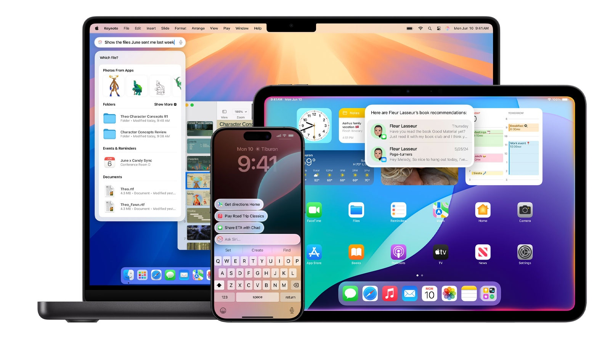

Apple Intelligance
Una IA para todos
Apple Intelligence actúa como un copiloto inteligente, anticipando y respondiendo a las necesidades del usuario de manera intuitiva y eficiente. Desde la gestión de tareas diarias hasta la personalización de experiencias, esta IA está diseñada para ser un asistente confiable y discreto que se adapta a tus hábitos y preferencias.
